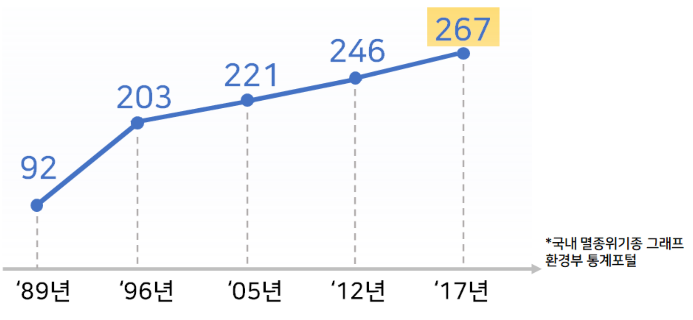
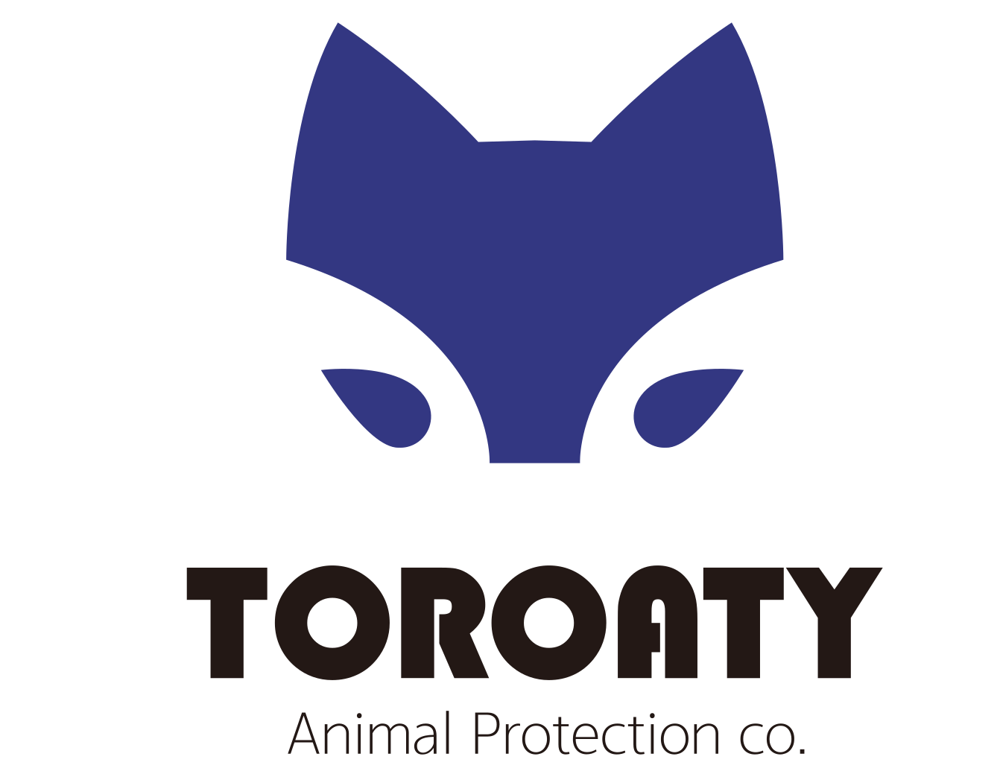
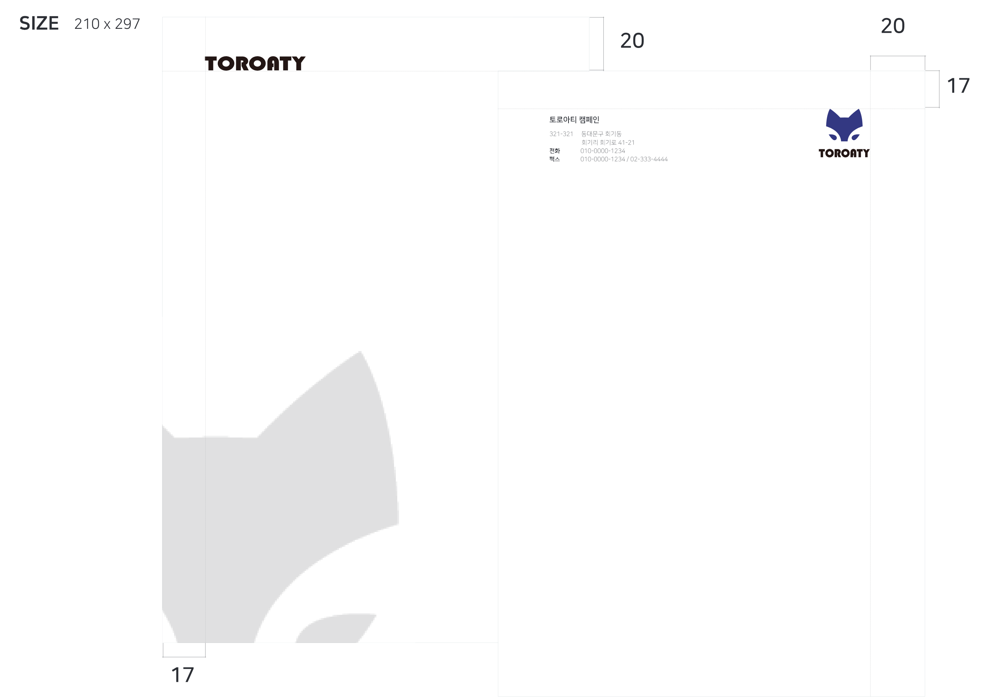

TOROATY LOGO Design

토로아티는 해가 갈수록 늘어나는 국내 멸종위기 야생동물들의 현실 속에서, 보다 많은 사람들의 관심과 인식을 개선하기위해 브랜딩 되었습니다.


토로아티는 멸종위기종인 담비를 형상화한 심볼과,
전통적 색상인 청색 컬러로 구성됩니다.
'토로'는 담비의 순우리말이며, '아티'는 연인과 친구를 상징하는 우리말입니다.

